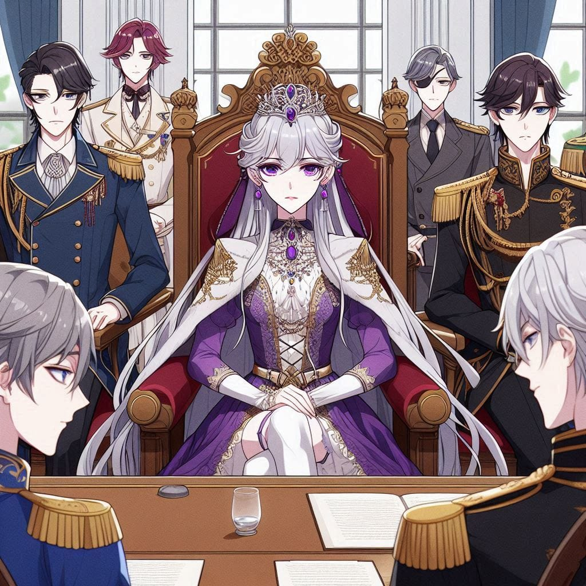

Saintana leaned back in her chair, attempting to find a brief moment of solace amidst her restless night. Suddenly, a sharp knock on the door broke the silence. It was Rimika, Taintai's trusted aide, known for his calm demeanor but notorious for struggling to communicate with Saintana, given her intimidating presence.
Rubbing her eyes, she said in her usual composed tone, "You may enter."
Rimika entered the room, holding a scroll tightly in his hands, his nervousness practically radiating off him. Saintana instantly noticed his unease and raised an eyebrow. "What's the matter? Is it time for someone's funeral?" she quipped, her voice carrying a hint of sarcasm.
The maid, unable to contain herself, chuckled softly before quickly trying to stifle her laughter.
Rimika, ignoring the comment, cleared his throat. "Apologies for disrupting your rest, my lady, but this is a matter of utmost importance. Your immediate presence is required in the council meeting."
Saintana tilted her head slightly, her expression unamused. "What now?"
Rimika hesitated, carefully choosing his words. "It’s... it’s about Quilientia, the empire of Aura Masters," he said cautiously, gauging her reaction.
Saintana, sensing that he would only continue his roundabout explanations, sighed and stood up. "Prepare the meeting room. I’ll be there in a minute," she commanded, dismissing him with a wave of her hand. Rimika bowed and left promptly to carry out her orders, while Saintana’s maid sprang into action, preparing her lady for the meeting.
Within thirty minutes, Saintana entered the council room, her presence immediately commanding respect. Her graceful aura seemed to lighten the grand hall, where Taintai IX sat alongside delegates from five other empires and a messenger from Quilientia. With her usual poise, she took her seat and gestured for the meeting to begin.
The messenger from Quilientia stood and delivered the key point of the gathering. "The heir to the Quilientia throne, missing for twelve years and returned ten years ago with no memory of his past has now regained all of his memory, and is now prepared to make his societal debut. This debut is essential for his recognition as the future crown prince and ruler of our empire. As Quilientia was established as an independent nation for Aura Masters, this event will mark him as only the second ruler in our history.
"To ensure his authority remains unquestioned, we request the debut to be hosted in Saintara, with your empire's approval and the formal backing of Lady Saintana in the presence of noble representatives from all allied empires."
Saintana processed the request quickly. She had no real choice but to agree to the arrangement, knowing the political weight such an endorsement carried. "Very well," she said decisively. "The preparations will be overseen by Deaus, who, as a native of Quilientia and one of its most skilled Aura Masters, will ensure the event respects your traditions and preferences. This will also strengthen the bond between our empires."
Her words carried finality, but she glanced around the room. "Any questions?"
A minister from Romancia, the empire associated with the earth attribute, spoke up with a thinly veiled greed in his voice. "Who will oversee the budget for this arrangement?"
Saintana could see the avarice in his eyes, his hopes of pocketing funds practically written across his face. To cut through any potential corruption, she turned to Rimika. "Rimika, you will collect all budget proposals, evaluate them, and select the best one," she instructed.
The minister’s face fell as his underhanded plans crumbled before him. Saintana rose from her seat and murmured under her breath as she left, "One more headache."
Once she had departed, the council room erupted into murmurs and gossip. The minister from Romancia, clearly agitated, muttered aloud, "What’s so special about her that we have to obey her every word?"
Taintai IX, who had remained silent until then, turned to him with a piercing glare. "If you can handle even a single one of her responsibilities, I’ll make you the prime minister of Saintara this instant."
The room fell silent for a moment before bursting into laughter at the audacious remark, mocking the minister's arrogance.
Meanwhile, Saintana changed into her casual attire, unfazed by the noise left behind in the council room. With her mind already focused on her next tasks, she resumed her daily duties, her usual calm composure concealing the storm within.